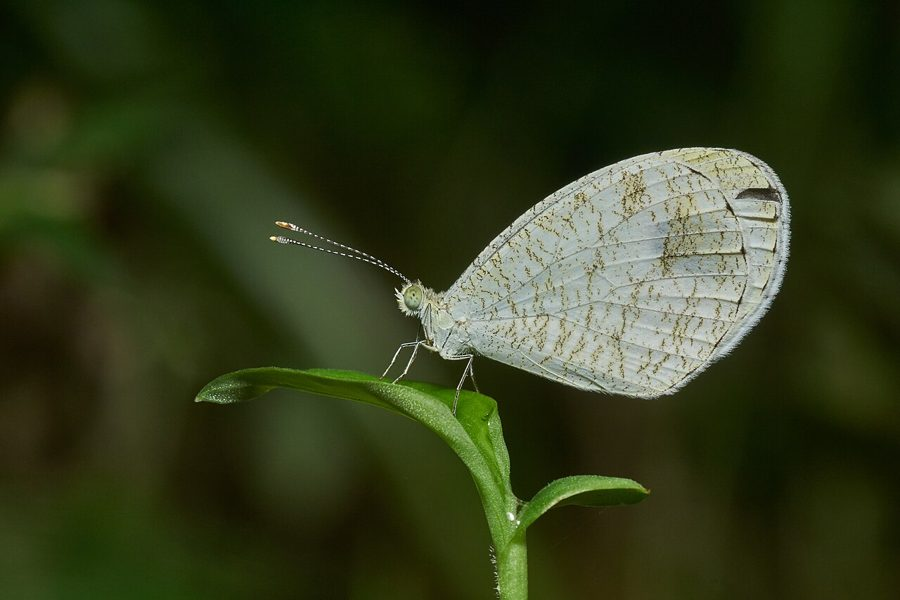

साइकी तितलीPsyche
Leptosia nina · Pieridae · INS-0102

- Scientific name वैज्ञानिक नाम
- Leptosia nina (Fabricius, 1775)
- Family कुल
- Pieridae
- Hindi हिंदी
- साइकी तितली
- Local names स्थानीय नाम
- psyche, psyche butterfly, saiki titli, psyche titli
- Status here यहाँ की स्थिति
- native
- Movement आवागमन
- Resident, here all year
- IUCN IUCN
- not evaluated
- Review समीक्षा
- audited and independently read
When to look कब देखें
Present all year. साल भर मौजूद।
Tell it apart from इनसे अलग पहचानें
साइकी तितली / Psyche
Leptosia nina (Fabricius, 1775) — Pieridae
साइकी तितली — पूर्वी उत्तर प्रदेश में बहुत आम रूप से पाई जाने वाली सबसे छोटी सफ़ेद तितलियों में से एक है। इसके पंख शुद्ध सफ़ेद होते हैं जिन पर नर के पंखों के सिरों पर कुछ काली पट्टियाँ होती हैं। यह इतनी छोटी होती है कि शुरुआत में लोग इसे एक कीट समझते हैं। यह बहुत कमज़ोर और धीमी गति से उड़ती है और घास की पत्तियों के पास ही रहती है। इसकी इल्ली कपरीस (कैपर) पौधों की पत्तियों पर खाती है।
Quick Identification त्वरित पहचान
| Feature | Description |
|---|---|
| Size | Extremely small butterfly; smallest in the region (body length 12–14 mm; wingspan 22–28 mm) |
| Colour | Pure white or very pale white upper surface |
| Male Wings | Mostly white with black or dusky tips on the forewing apex and sometimes a dark spot at the base |
| Female Wings | White with more extensive dark markings; more visible apex marking |
| Underside | White or very pale, sometimes with faint yellowish tones |
Field tip: Look for the tiniest white butterfly in the region, flying weakly and slowly close to the grass or ground. The extremely small size is unique and diagnostic. Males are nearly pure white; females have slightly more dark markings. The flight is much weaker and slower than larger whites.
Morphology आकारिकी
Biometrics (typical measurements in northern Indian plains):
| Measurement | Range |
|---|---|
| Body length | 12–14 mm |
| Wingspan | 22–28 mm |
| Forewing length | 11–13 mm |
Body: Extremely slender, very small, with clubbed antennae.
Wings (dorsal):
- Male: Pure white or very pale white, with black or dusky markings confined mainly to the apex (wingtip) of the forewing; sometimes a small dark basal spot.
- Female: White with more prominent dark markings on the apex and margins of both wings.
Wings (ventral): White or very pale yellowish-white, sometimes with faint dusky markings.
Sexual Dimorphism: Females have more prominent dark markings than males.
Behaviour & Ecology व्यवहार और पारिस्थितिकता
The Psyche is the smallest butterfly in eastern UP. Despite its tiny size, it is a resident butterfly, although the details of its life history are less known than larger species. It flies weakly and remains close to the ground and vegetation, rarely rising more than a metre above the grass. Males may engage in hill-top aggregations. The species is highly cryptic due to its small size and pale coloration, and its presence is often overlooked. It utilizes a range of Capparaceae (caper) plants and related species for oviposition.
Life Cycle / Phenology जीवन चक्र
| Stage / Season | Event |
|---|---|
| Egg | Laid on Capparaceae plants; pale, tiny; hatch 4–6 days |
| Larval (Caterpillar) | 4–5 instars; mature larva 10–12 mm; pale green or yellowish; development 14–18 days |
| Pupa | Suspended chrysalis; pale green; 10–12 days to emergence |
| Adult | Year-round with peak abundance July to November; multiple generations; lifespan 2–3 weeks |
Host Plants or Prey आहार
Larval host plants:
- Capparis spinosa (Caper / कप्पर)
- Capparis decidua (Naked Man Tree / करीर)
- Other Capparaceae species
Adult nectar sources:
- Low-growing flowers and flowering weeds throughout grasslands and open areas.
Predators / Natural Enemies शत्रु
- Small birds: Tiny insectivorous birds may prey on adults.
- Parasitoid Wasps: Micro-wasps parasitize eggs and larvae.
- Spiders: Small spiders hunting at ground level.
Agricultural / Human Relevance कृषि प्रासंगिकता
Pollinator. The Psyche, despite its small size, contributes to pollination of low-growing plants and weeds in grassland and agricultural margins.
Host plant connection. Its presence indicates the availability of Capparaceae plants in the landscape, which have various traditional and medicinal uses.
Expected Locally स्थानीय रूप से अपेक्षित
Not a field record. Written from published accounts for eastern Uttar Pradesh. No confirmed local sighting yet — if you have seen it, that is what the atlas needs.
अभी तक स्थानीय पुष्टि नहीं। यह विवरण प्रकाशित स्रोतों से है, किसी अवलोकन से नहीं।
To be expected throughout Basti district in grasslands, open wastelands, and areas where Capparaceae plants grow. Look for the tiniest white butterfly in the region, flying weakly close to the ground. The small size is absolutely diagnostic. Present year-round, most abundant from July to November. Easily overlooked due to its small size, but once you start looking, it can be found in many open habitats. The first local record would be a photograph with place and date; send it to the atlas contact on the About page.
Distribution वितरण
Global range: Widespread across Africa, the Middle East, and Asia, including South Asia and Southeast Asia.
In India: Distributed throughout the peninsula and plains.
In Uttar Pradesh: Present in all regions with suitable host plants.
In Basti district / eastern UP: Expected in all open grasslands and areas with Capparaceae plants.
Research Questions शोध प्रश्न
Anyone can investigate these | कोई भी इन प्रश्नों की जाँच कर सकता है
- How many generations of Psyche occur in Basti during one calendar year? / बस्ती में एक साल में साइकी तितली की कितनी पीढ़ियाँ बनती हैं? — Monitor emergence throughout the season.
- What is the life span of an adult Psyche in the field? — Mark and recapture individuals.
- Do Psyches show any hilltopping or aggregation behaviour as other small whites do? — Survey hilltops and aggregation sites.
- How does caterpillar food plant quality affect pupal size and adult wing size? — Measure development on different Capparaceae species.
- What percentage of Psyche pupae are parasitized by native wasps? — Collect pupae and monitor for wasp emergence.
Similar Species मिलती-जुलती प्रजातियाँ
| Species | How to tell apart | हिंदी | |
|---|---|---|---|
| [[common_gull\ | Common Gull]] (Cepora nerissa) | Larger; black-tipped wings; more robust flight | गल तितली — बड़ी, काली टिप |
| Common White (Pieris canidia) | Much larger; distinct black markings; stronger flight | सामान्य सफ़ेद — बहुत बड़ी |
Field rule: The tiniest white butterfly in the region, pure white with very weak, slow flight close to the ground, is the Psyche.
Taxonomy & Classification वर्गीकरण
Original description. Johann Friedrich Wilhelm Fabricius described the Psyche as Papilio nina in 1775 in his Systema Entomologiae (p. 455). The type locality is India. The genus Leptosia was established by Billberg in 1820. The species name nina is derived from Greek mythology.
Subspecies. Multiple subspecies are recognized; L. n. nina is the nominate and the subspecies present in India and UP.
Family and order placement. Order Lepidoptera, family Pieridae (whites and yellows), subfamily Pierinae.
Phylogenetic notes. Leptosia is an Old World genus of tiny pierid butterflies, with L. nina being the most widespread species.
IUCN status rationale. Not evaluated. Common and widespread, under no conservation threat.
Photo Gallery फोटो गैलरी
No photos yet — add field photos to media/species/psyche/ and run node scripts/sync_photos.js.
Photos needed आवश्यक फोटो
- [ ] Adult on grass (घास पर)
- [ ] Close-up of wings (पंख)
- [ ] Caterpillar on host plant (इल्ली)
References संदर्भ
- Fabricius, J.C. (1775). Systema Entomologiae. Flensburgi et Lipsiae, p. 455. [original description]
- Bingham, C.T. (1905). The Fauna of British India, including Ceylon and Burma. Butterflies. Vol. 1. Taylor & Francis, London.
- Kehimkar, I. (2008). The Book of Indian Butterflies. Bombay Natural History Society, Mumbai.
- Kunte, K. (2000). Butterflies of Peninsular India. Universities Press, Hyderabad.
- Zoological Survey of India (2010). Fauna of Eastern Uttar Pradesh.
- GBIF Occurrence Data — Leptosia nina, Uttar Pradesh (2010–2025).
Source file: species/fauna/insects/psyche.md